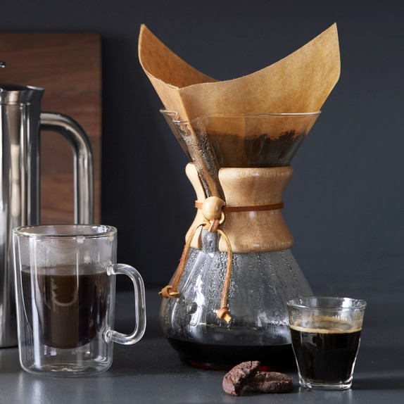

Chemex Coffee

Mmm coffee... This is my daily ritual.
The Chemex is a design icon (part of MoMA's permanent collection) thanks to a quirky, eclectic mash-up of laboratory-like features and natural materials.
What makes the Chemex truly unique, however, is the design of its proprietary bonded coffee filters which are considerably heavier than others and result in an unmatched clean cup.
This makes the Chemex a perfect choice for enjoying more acidic or floral light roast coffees that take on an almost tea-like quality (though it’ll brew you a delicious dark roast as well).
The learning curve is a little steeper than other methods but most home-brewers have no trouble making really good coffee after a little practice.
If you feel like making a bit more or less coffee, our recipe is totally adjustable, just use a gram of coffee for every 16 grams of water.
Ingredients
- 8-Cup Chemex Coffee Maker
- Paper Filter
- Gooseneck Kettle
- Scale
- 700ml Filtered Water
- 43g Medium-Course Ground Coffee
Steps
- Unfold the filter with the three-fold side facing the spout.
- Rinse the filter with plenty of hot water to help “seal” it against the glass and remove the papery taste — it also preheats your Chemex. Discard this rinse water (magically, you don’t actually need to take out the filter to pour out your water) and set up your brewer on a kitchen scale.
- Add your grinds and tare scale.
- Bloom coffee.
- Slowly pour water in a spiral or circular motion until the water level reaches around a half inch below the top rim of the brewer. When the level drops by about an inch (you don’t want to see the top of that coffee bed while brewing) pour again and repeat as needed until you’ve used all the water. With as much water as you’re using in this recipe, you’ll want to get all your water in at around two minutes.
- Keep an eye on the water level as it drips and when you start to see the coffee grounds appear, remove the filter and let it drain in the sink (the last few drops of water can be a little bitter).
- Serve and enjoy!